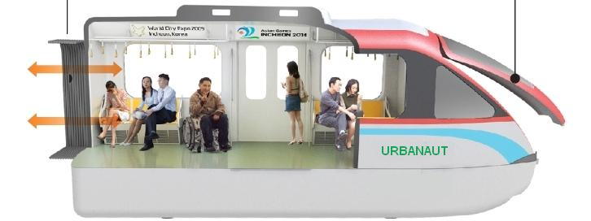

Метро је врста масовног јавног железничког транспорта. У већини случајева овај вид транспорта се одвија под земљом и зато је синоним за метро подземна железница. Метро саобраћај изводе лаки електрични возови - метро возови. Они имају погон на оба краја воза што им омогућава да се не окрећу на крајњим станицама. Машиновођа тада само замени кабину и пређе из једног у други крај воза и настави вожњу у супротном правцу.
Метро

